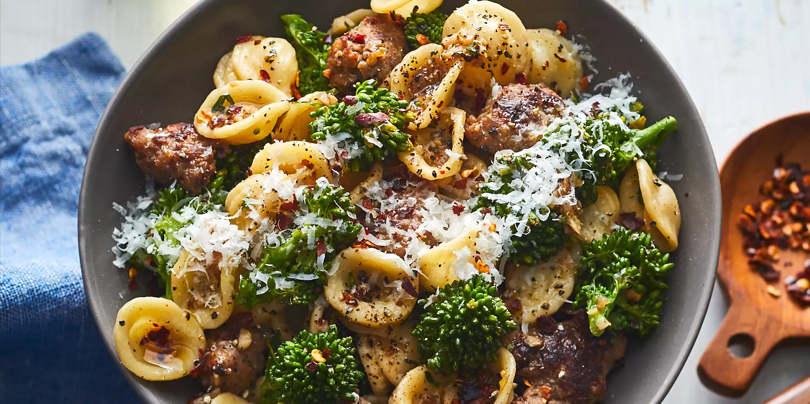

Sausage Broccoli Rabe Pasta

Description
Sausage Broccoli Rabe Pasta is a fantastic Italian-American
take on a classic Apulian Dish.
Ingredients
- Kosher salt
-
3 tablespoons (45ml) extra-virgin olive oil, plus extra for
drizzling
-
9 ounces (255g) sweet or hot Italian sausage (about 3 links),
removed from casing
- 3 garlic cloves (15g), minced
- 1 to 2 anchovy fillets
- 1/2 teaspoon red pepper flakes
- 1/2 cup (120ml) dry white wine
-
1 pound (450g; about 2 small bunches) broccoli rabe (rapini),
ends trimmed, leaves picked and separated from stalks with
florets
- 12 ounces (340g) dried orecchiette
- 1 1/2 ounces (45g) finely grated Pecorino Romano, divided
Steps
- Bring a large pot of salted water to a boil. Meanwhile, in a large skillet, heat olive over medium heat until shimmering. Using clean hands, add sausage to skillet by pinching off 1/2- to 3/4-inch pieces and arranging in a single layer in the pan. Alternatively, add sausage to skillet all at once, then break up into pieces with a wooden spoon, spreading them out evenly in the pan. Cook over medium heat, undisturbed, until bottom side is light golden brown, about 2 minutes. Using a spoon or thin metal spatula, turn sausage pieces onto uncooked side. Add garlic, anchovy (if using), and pepper flakes, and continue to cook until fragrant and anchovy has dissolved, 30 seconds to 1 minute.
- Increase heat to medium-high and add wine. Bring to a simmer and cook, swirling pan and scraping up any stuck-on bits with a wooden spoon, until wine has emulsified with olive oil and mixture is slightly reduced, about 30 seconds. Turn off heat.
- Add broccoli rabe stalk pieces (with florets attached) to boiling water and cook until stalks are barely tender, 1 minute 30 seconds to 2 minutes. Using a spider skimmer, drain well and transfer to a plate. Add rabe leaves to boiling water and cook until barely tender, about 1 minute. Drain, while keeping boiling water in the pot; transfer rabe leaves to plate with blanched stalks, keeping them separate. Using a sharp knife, cut stalks and florets into 1 1/2-inch pieces, then combine with blanched leaves; set rabe aside.
- Add orecchiette to boiling water and cook, stirring frequently for first 30 seconds to prevent pasta from sticking. Once pasta has cooked for 5 minutes, transfer 1 cup (240ml) of pasta cooking water to skillet along with broccoli rabe; continue cooking pasta. Return skillet to high heat and bring to a boil, swirling and stirring pan constantly until cooking water emulsifies with olive oil mixture, 1 to 2 minutes.
- Meanwhile, continue cooking pasta until it is softened on the exterior, but well shy of al dente and still uncooked in the center (about 3 minutes less than the package directions). Using a spider skimmer, transfer pasta to skillet. Alternatively, drain pasta using a colander or fine-mesh strainer, making sure to reserve at least 2 cups (475ml) pasta cooking water.
- Cook on high heat, stirring and tossing rapidly, until pasta is al dente and sauce is thickened and coats noodles, 2 to 3 minutes, adding more pasta cooking water in 1/4 cup (60ml) increments as needed. At this point, the sauce should just pool around the edges of the pan; it will continue to tighten up in the time it takes to plate and serve, so make sure it's a little looser than the ideal serving consistency.
- Remove from heat, add 3/4 of grated cheese, and stir rapidly to incorporate. Season with salt to taste. Serve immediately, passing remaining grated cheese at the table.